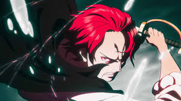

- Lionel Messi is widely regarded as one of the greatest football players in history. Born in Rosario, Argentina, he overcame a growth hormone disorder as a child to become a global sports icon. Known for his incredible dribbling, vision, and goal-scoring ability, Messi spent most of his career at FC Barcelona, where he broke countless records and won many trophies. In 2022, he led Argentina to win the FIFA World Cup, cementing his legacy. Beyond his talent, Messi is admired for his humility, dedication, and love for the game.
- Spider-Man, or Peter Parker, is a young superhero from Marvel Comics who gains spider-like powers after being bitten by a radioactive spider. Despite his extraordinary abilities—like wall-climbing, web-shooting, and super agility—Peter struggles with normal teenage life and responsibilities. He learns a powerful lesson from his Uncle Ben: “With great power comes great responsibility.” Spider-Man’s story is about courage, sacrifice, and doing the right thing, even when it's hard, which is why he's one of the most relatable and loved superheroes.

- Harry Potter is a young wizard from J.K. Rowling’s famous fantasy series. Orphaned as a baby, he learns on his 11th birthday that he is a wizard and begins attending Hogwarts School of Witchcraft and Wizardry. Throughout the series, Harry shows bravery, kindness, and loyalty as he faces dark forces, especially the evil Voldemort. With the help of his close friends, he grows from an ordinary boy into a true hero. His journey teaches us about friendship, courage, and standing up for what is right.

- Red-Haired Shanks is a powerful and respected pirate in the anime and manga series One Piece. Once a member of the Pirate King’s crew, Shanks now leads the Red Hair Pirates and is one of the Four Emperors ruling the seas. Despite his status, Shanks is calm, cheerful, and values peace over violence. He inspired the main character, Luffy, to become a pirate and gave him his iconic straw hat. Known for his mysterious past, strong Haki abilities, and influence across the world, Shanks is a symbol of balance, strength, and freedom.
Discover More About these Characters :
Discover More
Back to TOP